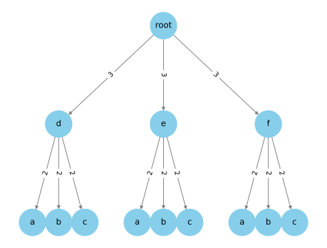
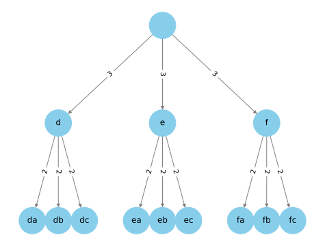
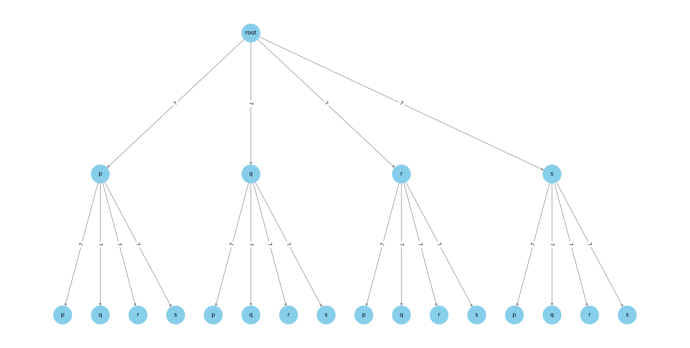

Letter Combinations of a Phone Number#
Problem#
Given a string containing digits from 2-9 inclusive, return all possible
letter combinations that the number could represent. Return the answer in any
order.
A mapping of digits to letters (just like on the telephone buttons) is given
below. Note that 1 does not map to any letters.

Fig. 69 Image.#
Example#
Input: digits = "32"
Output: ["da","db","dc","ea","eb","ec","fa","fb","fc"]
Intuition#
At the core, this is a combinatorial problem where you want to generate all possible combinations from a set of options for each digit. Let’s break the problem by first considering a single digit case, then extend it to multiple digits.
Single-Digit Case#
Start with the trivial case: one digit, say 3, which maps to the letters “d”,
“e”, “f”. The result is simply these letters, each forming a 1-letter
combination: [“d”, “e”, “f”].
Multi-Digit Case: 2-Digits as an Example#
Consider a 2-digit input, 32.
Take the first digit
3, and look up its corresponding letters:"d","e","f".For each of these letters, fix it as the starting letter for a combination.
Move to the next digit “2”, which maps to the letters
"a","b","c".For each starting letter from step 2, append each letter from this step. For example, starting with
"d", we append"a","b", and"c", to get the combinations"da","db", and"dc", then move on to the next starting letter"e", to get"ea","eb", and"ec", and lastly"f"to get"fa","fb", and"fc".
Now we’ve solved the 2-digit problem by reducing it to two 1-digit problems.
Extending to N-Digits#
The same reasoning generalizes to an N-digit input. You first solve the \((N-1)\)-digit problem to get all possible combinations of the first \(N-1\) digits. Each of these becomes a starting string to which you append each letter corresponding to the \(N\)-th digit. Essentially, you’ve recursively decomposed an N-digit problem into an \((N-1)\)-digit problem and a 1-digit problem.
Summary#
The problem is solved through a recursive decomposition: an N-digit problem is reduced to solving an \((N-1)\)-digit problem and a 1-digit problem. The base case is the 1-digit problem, which is trivial to solve. With this recursive decomposition, you can systematically generate all combinations for any \(N\)-digit input.
Assumptions#
String Concatenation Cost: It’s assumed that the cost of string concatenation is constant time, which is an approximation and might not hold for very long strings.
Unique Output Strings: The mapping of digits to alphabets is unique, meaning each digit will always map to the same set of alphabets. This is relevant for the idempotence of the function.
Constant Mapping: The mapping of digits to alphabets is assumed to be constant and known a priori.
Input Validity: The input string only contains digits and lies within the constraints defined; no validation for erroneous input is considered.
Constraints#
0 <= digits.length <= 4: This constraint limits the input size. It impacts both the space and time complexity of the problem. For an \(N\)-digit number, you can have up to \(3^N\) to \(4^N\) combinations, which could be computationally expensive for large \(N\). However, given the constraint \(N \leq 4\), the computational requirements remain manageable.
digits[i] is a digit in the range [‘2’, ‘9’]: This constraint limits the choices for each digit to at least 3 (for ‘2’ mapping to “abc”) and at most 4 (for ‘7’ mapping to “pqrs”). It simplifies the problem by not requiring handling for digits like ‘0’ or ‘1’, which traditionally don’t map to any alphabets in this context.
Test Cases#
Simple Test Cases#
Single Digit:
digits = "2"Expected Output:["a", "b", "c"]Two Digits, 3x3:
digits = "32"Expected Output:["da", "db", "dc", "ea", "eb", "ec", "fa", "fb", "fc"]
Complex Test Cases#
Four Digits, 3x4x3x3:
digits = "2736"Expected Output: All combinations of"apdm","apdn", …,"csfo".Four Digits, All have 4 choices:
digits = "7979"Expected Output: All combinations of “ptpt”, “ptpu”, …, “susu”.
Edge Cases#
Empty Input:
digits = ""Expected Output:[]. An empty input should result in an empty list.Single Digit with 4 Choices:
digits = "7"Expected Output:["p", "q", "r", "s"]. It tests whether the function can handle the maximum number of choices for a single digit.All Digits Same:
digits = "2222"Expected Output: All combinations of “aaaa”, “aaab”, …, “cccc”. This tests the function’s ability to handle repetitive digits.Non-Sequential Digits:
digits = "279"Expected Output: All combinations of “apa”, “apb”, …, “csu”. This ensures that the function works for non-sequential digits.
Walkthrough / Whiteboarding#
Detailed walkthrough of the problem-solving process.
Theoretical Best Time Complexity#
Discussion of the theoretical best time complexity for this problem.
Theoretical Best Space Complexity#
Discussion of the theoretical best space complexity for this problem.
Space-Time Tradeoff#
Analysis of the tradeoff between space and time complexity for the problem.
Solution (Potentially Multiple)#
Intuition#
At the core, this is a combinatorial problem where you want to generate all
possible combinations from a set of options for each digit. One way to
intuitively think about it is as a tree structure. For instance, if the input
digits are “32”, then the first digit “3” maps to letters ["d", "e", "f"] and
the second digit “2” maps to ["a", "b", "c"]. The root of the tree could start
with an empty string, and each layer of the tree represents appending one of the
letters corresponding to the next digit. We would then traverse this tree to
generate all combinations.
The diagram below illustrates this idea. The root node is an empty string, and each layer represents appending one of the letters corresponding to the next digit. The leaf nodes represent the final combinations.

The below diagram directly illustrates how at the leaf nodes, you “have information” about the entire combination, which is the path from the root to the leaf.

More concretely, we can represent this combinatorial problem as a state space tree, where each node represents a partial or complete solution to the problem. The root represents the initial state with an empty string, while each level of the tree represents the choices available at that particular step, dictated by the associated digit in the phone number. By the time you reach a leaf node, you’ve made a selection for each digit, thereby forming a complete solution to the problem.
Refining the Intuition#
Root Node: The root node is the starting point, representing an empty string. This is where no choices have been made, and it encapsulates the initial state of the problem.
Internal Nodes: Nodes at the second level (“d”, “e”, “f”) represent making a choice based on the first digit (“3”). These choices are extended by the third level of the tree, which includes nodes like “da”, “db”, “dc”, and so forth. Each such node signifies a path from the root, reflecting the choices made at each step.
Leaf Nodes: These are the terminal nodes that represent complete solutions, like “da”, “db”, etc. Each leaf node is a valid combination of letters for the given phone number.
Edge Labels: The labels on the edges represent the digit being used to generate the next set of choices. For example, an edge labeled “3” means we are considering the choices mapped from the digit “3”, and an edge labeled “2” means the choices come from the digit “2”.
Depth of the Tree: The depth of the tree corresponds to the length of the phone number. For example, for a 2-digit number, the tree will have a depth of 2.
Traversal and Solution Space: When you traverse from the root to any leaf, you essentially traverse a path in the solution space defined by the phone number. The number of leaves will be the number of possible combinations.
State Space Trees#
Enumerative State Space Tree: This is the actual tree where each node represents a state, and the children of each node represent the states reachable from the current state. Here, the nodes at level \(i\) represent all possible states of the problem after \(i\) decisions. In the example, the states are strings formed from mapping the digits to letters.
Implicit State Space Tree: This is a conceptual tree that represents the solution space rather than actual states. It is used mainly for theoretical analysis and isn’t explicitly generated.
Both types of state space trees capture the nature of the problem: combinatorial, incremental construction of solutions, and the decisions made at each step. Your diagram serves as an enumerative state space tree and effectively visualizes the problem and its solution space.
Visualization#
The visualization for digits 32 can be seen below:
Fitting in to Constraints Satisfaction Problem (CSP) Framework#
Domains \(\mathcal{D}\)#
Let \(\mathcal{D}\) be the mapping that associates each digit \(d \in \{2, 3, 4, 5, 6, 7, 8, 9\}\) to a set of letters.
where \(D_i\) is the set of letters that digit \(i\) can map to. We did not start the index at \(0\) because the digits start at \(2\), so it is easier to read.
For example, \(D_2\) is the set of letters that digit \(2\) can map to, which is \(D_2 = \{a, b, c\}\).
More concretely, we have:
Variables \(\mathcal{V}\)#
The variables \(\mathcal{V}\) are the digits in the input string defined as:
Each variable \(V_i\) represents a digit in the input string and can take on any value from its corresponding domain \(D_i\).
For example, \(V_2\) represents the digit \(2\) in the input string and can take on any value from its corresponding domain \(D_2 = \{a, b, c\}\):
However, we can be more precise and align \(\mathcal{V}\) with the input string \(S = s_1s_2\ldots s_n\), we could define ours variables \(\mathcal{V}\) based on the length \(N\) and the particular digits in \(S\). For example:
where \(V_{s_i}\) is the variable corresponding to the digit \(s_i\) in the input string \(S\).
For example, if the input string is \(S = 2736\), then the variables \(\mathcal{V}\) are:
Constraints \(\mathcal{C}\)#
For this problem, \(\mathcal{C}\) is essentially empty (\(\mathcal{C} = \{\}\)) because each digit \(V_i\) can independently take any value from its corresponding domain \(D(V_i)\), without any inter-variable constraints.
Problem Representation#
Given a phone number \(S = s_1s_2\ldots s_n\), the problem can be formulated as follows:
More concretely, for the phone number \(S = 2736\), the problem can be formulated as:
which yields the set of all possible letter combinations for the phone number \(S = 2736\). For example, the combination “apdm” is in the Cartesian product.
Algorithm#
See backtracking for a refresher on backtracking.
Pseudocode#
Let \(N\) be the length of the input digit string, and let \(D_i\) represent the set of possible letters corresponding to the \(i^{th}\) digit (indexed from 0).
Algorithm 28 (Pseudocode)
Algorithm: letterCombinations(digits)
Input: digits (string of digits with length \(N\))
Output: paths (list of strings)
Define function "letterCombinations(digits)"
if digits is empty
Return empty list
Initialize an empty list "paths"
Define function "backtrack(path, start_index)"
If start_index = N
Add path to "paths"
Return
For each letter in D_{digits[start_index]}
Append letter to path
Call backtrack(path, start_index + 1)
Remove last letter from path
Call backtrack("", 0)
Return paths
Mathematical Representation#
Let \(S\) be the input string with length \(N\). The problem can be represented as a decision tree where each node has a set of children nodes corresponding to the next digit’s possible letters. We will recursively traverse this tree to generate all possible paths from root to leaf, where each leaf is a valid letter combination.
In formal terms, this is akin to calculating the Cartesian product:
Correctness#
Claim#
The algorithm correctly generates all possible combinations of letters corresponding to the digits in the input string.
Proof#
Proof. We will use induction to prove that the algorithm is correct.
Base Case: For \(N = 0\), the function immediately returns an empty list. This is correct since there are no letters that correspond to an empty input digit string.
Inductive Hypothesis: Assume that for some \(k < N\), calling the function
backtrack(path, start_index)correctly produces all combinations from the \(k^{th}\) digit onwards and appends them topaths.Inductive Step: Consider when
backtrackis called withstart_index = k. The function iterates through all the possible letters corresponding to the \(k^{th}\) digit, appends them topath, and calls itself recursively withstart_index = k + 1. By the inductive hypothesis, this will generate all valid combinations from the \((k+1)^{th}\) digit onwards.
Thus, by mathematical induction, we prove that the algorithm correctly generates all possible combinations of letters corresponding to the input string’s digits.
Implementation#
If we follow the template in backtracking as well as coupled with the algorithm defined earlier:
def backtrack(root, path):
if is_leaf(root): # base case, leaf=complete assignment
output(path)
return
# iterate all possible candidates.
for edge in get_edges(root):
path.add(edge)
backtrack(root + 1, path)
path.pop()
We can write the following code:
1class Solution:
2 def letterCombinations(self, digits: str) -> List[str]:
3 digits_len: int = len(digits)
4 digits_to_letter: Dict[int, str] = {
5 2: "abc",
6 3: "def",
7 4: "ghi",
8 5: "jkl",
9 6: "mno",
10 7: "pqrs",
11 8: "tuv",
12 9: "wxyz",
13 }
14
15 # base case 1: need not be in backtrack function because
16 # it guarantees an immediate return.
17 if len(digits) == 0:
18 return []
19
20 # is path considered a root?
21 def backtrack(path: List[str], start_index: int = 0) -> None:
22
23 if start_index == digits_len: # or len(path) == len(digits)
24 # hit leaf add solution to it no constraints here
25 paths.append("".join(path))
26 return None
27
28 variable = digits[start_index] # V_i = 3
29
30 # {'d', 'e', 'f'} (possible letters)
31 domain = digits_to_letter[int(variable)]
32
33 # start loop through the possible letters (Domain) of the
34 # CURRENT DIGIT (Variable)
35
36 for letter in domain:
37 # add letter to current path
38 path.append(letter)
39
40 # move on to next digit while still in the current letter
41 backtrack(path, start_index + 1)
42 # if dfs hits base case, it should return and get out of stack
43 # call, so we need to pop
44 path.pop() # "da" -> "d" then branch out from "d" to "db" etc
45
46 paths: List[str] = []
47 backtrack(path=[], start_index=0)
48 return paths
Start with empty soln: path=””
recursively Extend select a var from V and assign a value,
for instance, if we select 2 from V, we can have choices of assigning either a,b or c.
so you treat the edge as 2 for each edge connecting to a,b,and c.
so now we assign a
do not need to prune no constraints
so now we look next edge, which is edge for variable 3
and we choose d
then we got ad since we reached leaf.
Tests#
We use the compare_test_cases_dsa function to compare the actual and expected
outputs of the test cases. We also use Python’s itertools.product to generate
the Cartesian product, which in this case would give you all the letter
combinations for the input digits.
1def expected_combinations(digits: str) -> List[str]:
2 digits_to_letter = {
3 "2": "abc",
4 "3": "def",
5 "4": "ghi",
6 "5": "jkl",
7 "6": "mno",
8 "7": "pqrs",
9 "8": "tuv",
10 "9": "wxyz",
11 }
12
13 if digits == "":
14 return []
15
16 # Generate the list of letter lists for each digit
17 letter_lists = [list(digits_to_letter[digit]) for digit in digits]
18
19 # Generate the Cartesian product of the letter lists
20 all_combinations = product(*letter_lists)
21
22 # Convert the tuples to strings and collect them into a list
23 return ["".join(combination) for combination in all_combinations]
24
25# Prepare test data
26actual_list = [
27 Solution().letterCombinations("2"),
28 Solution().letterCombinations("23"),
29 Solution().letterCombinations("2736"),
30 Solution().letterCombinations("7979"),
31 Solution().letterCombinations(""),
32 Solution().letterCombinations("7"),
33 Solution().letterCombinations("2222"),
34 Solution().letterCombinations("279"),
35]
36
37expected_list = [
38 expected_combinations("2"),
39 expected_combinations("23"),
40 expected_combinations("2736"),
41 expected_combinations("7979"),
42 expected_combinations(""),
43 expected_combinations("7"),
44 expected_combinations("2222"),
45 expected_combinations("279"),
46]
47
48description_list = [
49 "Single digit",
50 "Two digits 3x3",
51 "Four digits 3x4x3x3",
52 "Four digits all have 4 choices",
53 "Empty Input",
54 "Single digit with 4 choices",
55 "All digits same",
56 "Non-Sequential Digits",
57]
58
59# Run the tests
60compare_test_cases(
61 actual_list=actual_list,
62 expected_list=expected_list,
63 description_list=description_list,
64)
Time Complexity#
The time complexity for the worst case is \(\mathcal{O}(4^N \cdot N)\), where \(N\) is the length of the input string. Why so?
First, we must be clear that the number \(4\) is the maximum number of letters that a digit can map to. For example, the digit \(7\) maps to the letters \(\{p, q, r, s\}\), which is a set of 4 letters. The digit \(2\) maps to the letters \(\{a, b, c\}\), which is a set of 3 letters. This \(4\) is not referring to the number of digits in the input string.
Secondly, the worse case is if the input string contains only digits that map to 4 letters. For example, the input string \(S = 777\) is considered a worst case because each digit maps to 4 letters.
Typically, to count the time complexity of a recursive tree, we usually count the number of nodes in the tree and examine how much work is done at each node.
We just examine the case where there’s two digits in the input string, for instance \(77\). The recursive tree would look like this:

The total number of nodes in the tree is:
We have two main cases:
At each internal node (not the leaf node), we do \(\mathcal{O}(1)\) work, because we are just appending a letter to the path.
At each leaf node, we do \(\mathcal{O}(N)\) work, because we are converting the path to a string using
join.We also
popthe last letter from the path, which is \(\mathcal{O}(1)\).
So in total, we do \(\mathcal{O}(1)\) work at each internal node and \(\mathcal{O}(N)\) work at each leaf node for joining the string, and \(\mathcal{O}(1)\) work for popping. The total work done is:
But we are missing something here as we do not see the \(4^N\) term. The reason is the coefficient \(16\) is a function of \(N\). In particular, the coefficient \(16\) is the number of leaf nodes in the tree, which is \(4^N\). So the total work done is:
We are more interested in the total number of leaf nodes in the tree because it dominates the time complexity. By simple combinatorics, if a digit string is of length \(N\), and each digit maps to 4 letters, then the total number of leaf nodes is \(4^N\). You can visualize by thinking of it as a geometric series:
At level 0, there is 1 node - \(4^0\).
At level 1, there are 4 nodes - \(4^1\).
At level 2, there are 16 nodes because for each of the 4 nodes at level 1, there are 4 nodes at level 2 - \(4^2\).
At level 3, there are 64 nodes because for each of the 16 (\(4^2\)) nodes at level 2, there are 4 nodes at level 3 - \(4^3\).
At the last level, we have \(H\) (height), there are \(4^H\) nodes.
And since our height of the tree is defined by the length of the input string, we have \(H = N\). So the total number of leaf nodes is \(4^N\).
Thus to conclude, we need to only count the number of leaf nodes because the time complexity is dominated by the leaf nodes. Consequently, the time complexity is \(\mathcal{O}(4^N \cdot N)\).
For the case of 3 digits such as \(777\), the tree above will branch out \(64\) more nodes at the last level, so the total number of leaf nodes is \(4^3 = 64\). I won’t plot it out as it is too big.
Remark 95 (Remark)
One question you might have is what if the digits string is something like \(723\)? The total number of leaf nodes is \(4 \times 3 \times 3 = 36\), which is not \(4^3 = 64\). This is because the tree is not full, and the number of leaf nodes is not \(4^3\). However, we are only interested in the worst case, which is when the tree is full, and the number of leaf nodes is \(4^3 = 64\).
Generalization#
Generalizing to \(M\) Letters#
If we generalize the problem to allow each digit to map to \(M\) letters, then the time complexity would be \(\mathcal{O}(M^N \cdot N)\).
Generalizing to \(K\) Digits#
Number of Function Calls: We’ll stick to the tree analogy, where each node in the tree represents a function call.
Intermediate Nodes: Each intermediate node at level \(i\) will still have \(\prod_{j=0}^{i-1} |D_{\text{digits}[j]}|\) children where \(j\) represents each digit in the input string.
Leaf Nodes: These are the terminal points of the tree where an actual string join operation occurs. The number of leaf nodes can be represented by \(\prod_{j=0}^{N-1} |D_{\text{digits}[j]}|\).
The total number of function calls \(T\) is the sum of the nodes at each level plus the leaf nodes:
\[ T = \sum_{i=0}^{N-1} \left( \prod_{j=0}^{i} |D_{\text{digits}[j]}| \right) + \left( \prod_{j=0}^{N-1} |D_{\text{digits}[j]}| \right) \]Work Done Per Function Call:
Intermediate Nodes: For each intermediate node, the cost for appending and removing elements to/from
pathis \(O(1)\).Leaf Nodes: At each leaf node, the
pathis joined to form a string which takes \(O(N)\), where \(N\) is the length of the resultant string.
Given this, the total time complexity is:
Here, \(N\) is essentially the depth of the tree (also length of string), making the term \(N \left( \prod_{j=0}^{N-1} |D_{\text{digits}[j]}| \right)\) represent the time taken for the join operation at all the leaf nodes. This formula accounts for both the work done at intermediate nodes and leaf nodes, incorporating the complexities introduced by varying domain sizes for each digit and operations such as append and join.
Example 59 (Example)
Let’s consider a concrete example with the string \(S = 237\).
The domain \(D_{\text{digits}[0]} = \{ 'a', 'b', 'c' \}\), corresponding to the digit \(2\).
The domain \(D_{\text{digits}[1]} = \{ 'd', 'e', 'f' \}\), corresponding to the digit \(3\).
The domain \(D_{\text{digits}[2]} = \{ 'p', 'q', 'r', 's' \}\), corresponding to the digit \(7\).
For a node at level \(i = 0\) (the root), the number of children is \(|D_{\text{digits}[0]}| = 3\).
For a node at level \(i = 1\), the number of children is \(\prod_{j=0}^{i} |D_{\text{digits}[j]}| = |D_{\text{digits}[0]}| \times |D_{\text{digits}[1]}| = 3 \times 3 = 9\).
For a node at level \(i = 2\), the number of children is \(\prod_{j=0}^{i} |D_{\text{digits}[j]}| = |D_{\text{digits}[0]}| \times |D_{\text{digits}[1]}| \times |D_{\text{digits}[2]}| = 3 \times 3 \times 4 = 36\).
The number of children for a node at any level \(i\) can be calculated using the formula \(\prod_{j=0}^{i} |D_{\text{digits}[j]}|\) which is the product of the domain sizes of all the digits up to the \(i^{th}\) digit.
where \(48\) is actually a function of \(N\) and the domain sizes of each digit.
Space Complexity#
Input Space Complexity#
The primary input is the string of digits, with a length denoted as \(n\). The storage of this string would require \(\mathcal{O}(N)\) space.
Auxiliary Space Complexity#
Recursion Call Stack: The maximum depth of the recursion tree would be the height of the tree \(N\) in this case. Each function call takes \(\mathcal{O}(1)\) space, making the space complexity due to recursion \(\mathcal{O}(N)\).
Hash Map: The hash map storing the mapping from digits to corresponding letters is constant in size and does not depend on the input size. This takes \(\mathcal{O}(1)\) space.
The auxiliary space complexity would then be \(\mathcal{O}(N) + \mathcal{O}(1) = \mathcal{O}(N)\).
Total Space Complexity#
Adding the input and auxiliary space complexity, the total space complexity of the algorithm would be \(\mathcal{O}(N) + \mathcal{O}(N) = \mathcal{O}(N)\).